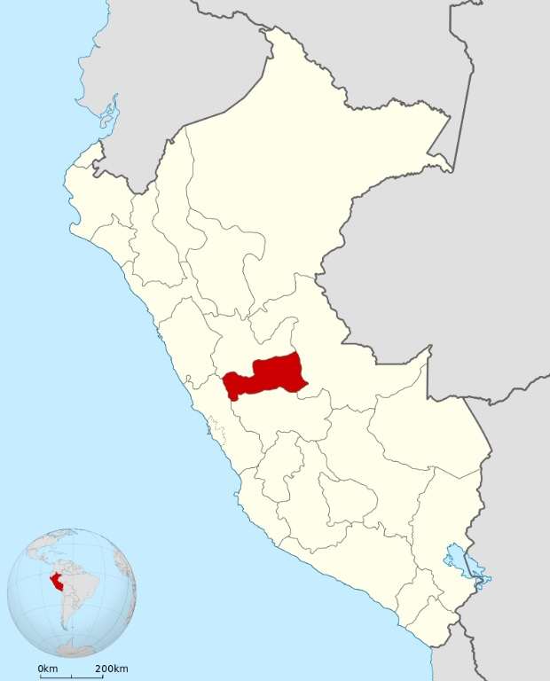
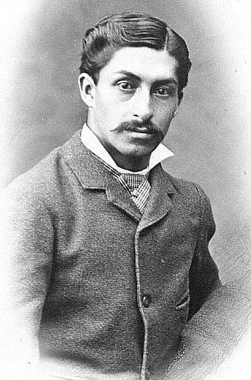
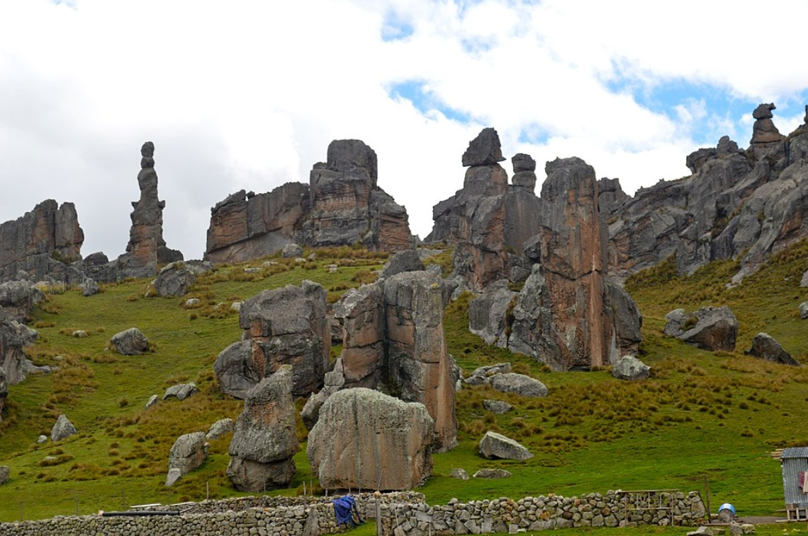

Pasco es uno de los veinticuatro departamentos que, junto con la Provincia Constitucional del Callao, forman la República del Perú. Su capital es Cerro de Pasco. Está ubicado en el centro del país, en la región andina, limitando al norte con Huánuco, al este con Ucayali, al sur con Junín y al oeste con Lima. Su extensión es de 25 320 km² y una densidad de 11,1 hab/km. Fue creado el 27 de noviembre de 1944, escindido de Junín.
La porción occidental corresponde al Nudo de Pasco, zona de mesetas elevadas y puna, asiento de mineras, mientras que la porción oriental corresponde a la Selva Alta o yunga amazónica habitada por colonos e indígenas de la familia arahuaca.
A diferencia de otras ciudades capitales peruanas, esta ciudad nació como un asentamiento minero a finales del siglo XVI, ya que la ciudad capital, cabeza de curato y reducción de indios fue la Villa de Pasco que fue fundada el 20 de octubre de 1578 ubicada actualmente a 14 km.
La ciudad surgió a finales del siglo XVI gracias a la actividad minera con la cual inició su crecimiento por inmigración a principios del siglo XVII. Actualmente tiene una población de más de 70.000 habitantes (Censo 2007), partidos entre los distritos de Chaupimarca (28.000 hab.), Yanacancha (28.000 hab.) y Simón Bolívar (14.000 hab.). La ciudad se ubica alrededor de la mina a tajo abierto más alta del mundo, que se extiende sobre 2 km y casi 400 m de profundidad, amenazando ahora la ciudad, por lo que se proyecta reubicarla, también a causa de los problemas de contaminación de la minería sobre la población. En 1639, durante el Gobierno del virrey Luis Fernández y Cabrera, se le envió a la Corona Española cinco millones de ducados procedentes de Cerro de Pasco, por lo que mediante Real Cédula se le otorga el título de " Ciudad Real de Minas " al asiento minero de San Esteban de Yauricocha.
A la fama de sus minas acudían muchos españoles interesados y entre ellos Martín Retuerto, quien trabajó la mina Lauricocha, dando un socavón que fue el primero en el que hubo mineral. José Maíz y Arcas compró de los herederos de Retuerto la mina citada en 1740 y dirigió un socavón al mismo paraje, terminándolo en 1760. A partir de 1760, tras el descubrimiento de las vetas de plata del "Gran Túnel de Yanacancha", Cerro de Pasco multiplicó su potencial minero. La abundante riqueza que había en estos yacimientos llegó en un contexto de extrema importancia para la Corona Española porque Potosí, otro asentamiento minero que era explotado por la Metrópoli, había entrado en bancarrota. Potosí, también situado en el Virreinato del Perú, pero en el territorio que actualmente ocupa Bolivia, había sido hasta entonces la mayor productora de plata del mundo, pero, tras dos siglos de extenuante explotación, su abrumadora riqueza había sido exprimida definitivamente. Cerro de Pasco, la "Ciudad Real de Minas", se convirtió en el sustituto natural de Potosí y cogió su relevo como principal centro minero de la Corona Española perteneciendo a la Intendencia de Tarma.
El minero español José Maíz y Arcas fue quien descubrió la mina de plata del "Gran Túnel de Yanacancha", convirtiéndose en uno de los hombres más acaudalados de Cerro de Pasco. Tal era su riqueza que en 1764 solicitó el título de "Marqués" a la Corona Española, previo pago del mismo con barras de plata que habían salido de las entrañas de Cerro de Pasco. En 1771, el rey Carlos III otorgó a Don José Maíz y Arcas el título de "Marqués de la Real Confianza". Sin embargo, éste llegó cuando el minero español ya había fallecido, lo que provocó una dramática disputa entre sus hijos varones por la legítima herencia del mismo.
Cuando se supo que los terrenos eran ricos y productivos en metales, vinieron los Salcedos desde Puno a trabajar a Yanacancha y Pariajirca; estas propiedades pasaron después a la familia Arrieta, de José Casimiro Arrieta, Minero y Antonio de Arrieta, del Oratorio San Phelipe Nieri, familia vasco española procedente de Tarma y de las más importantes en toda la Sierra Central, siendo el primero Licenciado Mathías Fernández de Arrieta casado con María Escolástica Muníz de Llanos, esta familia tarmeña se estableció en 1619 en Tarma.2
El "Gran Túnel de Yanacancha", donde los "Japiris" (capacheros aborígenes de las alturas) sacaban la plata, bajo la atenta mirada y el control férreo de los subordinados del dueño de la mina, supuso el impulso definitivo de Cerro de Pasco como realidad urbana e industrial. Cerro de Pasco aumentó vertiginosamente en tamaño y en servicios. En 1771, el virrey Manuel Amat y Juniet concede a Cerro de Pasco el título de "Distinguida Villa del Cerro de Pasco", donde en 1833 se fundó la Casa de Moneda de Pasco (aún no redactado)">Casa de la Moneda" que acuñó en plata fina los "cuatro reales de Pasco" En busca de sus vetas de plata llegaban tantos empresarios y aventureros extranjeros que, a principios del siglo XIX, había en Cerro de Pasco doce viceconsulados de países europeos y americanos.
Sin embargo, esta época de esplendor también conoció dramáticos desastres, como cuando, después de un devastador terremoto, quedaron sepultados trescientos hombres al hundirse una mina. El socavón de la tragedia recibió el nombre "mata gente".
En septiembre de 1999 los capitales privados Volcán S.A.A. compran la unidad Paragsha a Centromin Perú S.A.C. El cual explota en la actualidad (2007) plomo y zinc, habiendo heredado el problema social de sus antecesores.
Hace unos 10 000 años, más o menos, llegaron aquí las primeras oleadas humanas. Mucho después aparecieron grupos humanos en Ranracancha (Yanahuanca). Entre los años 200 a.C. a los 900, la región estuvo bajo la influencia del imperio Wari. Tras el ocaso de esta cultura, Yaramas, Huancas y Yarovilcas invadieron el sur y centro de la serranía. Las minas de y oro, que le dieron fama a la región, ya eran conocidas y trabajadas por los cuando llegaron los españoles. La profusión de estas minas atrajo a numerosos encomenderos, quienes arribaron a la zona acompañados por, a mediados del siglo XVI. Fueron estos hombres los que fundaron los pueblos del departamento de Pasco. La moderna explotación minera en gran escala empieza a principios del siglo XX. En 1960, Pasco recibió el título de Capital minera del Perú por (cerro s.a.c). En sus tierras nació el más grande héroe civil del: el estudiante de Daniel Alcides Carrión, mártir de la medicina peruana. Cerro de Pasco fue la atracción de los españoles, debido a que en este sitio se encontraba el yacimiento minero.
La colonización de la selva se convirtió en un tema muy importante para los políticos, los mismos que intentaron a través de los jóvenes extranjeros invadir terrenos y establecer asciendas en esta zona. La población resistió los retos quienes hasta hoy conservan sus tradiciones.
Pasco, es un departamento muy complejo, porque presenta una gran variedad de pisos ecológicos y microclimas que van desde la puna hasta la selva tropical y, junto con ellos, todo una gran variedad de recursos naturales y culturales.
Está ubicado en la parte central del país, al este de la cordillera Occidental, con zona central del Perú andinas y de selva alta y media del río Pachitea. Su capital, la ciudad de Cerro de Pasco, con una altitud de casi 4.338msnm, es la más alta del país y considerada por muchos "La ciudad más alta del mundo". Limita al norte con al sur con Junín; el este, con; y al oeste con Lima.
El Departamento tiene una extensión de 25025.84km² con una población 306576 habitantes 4 y se divide en tres provincias:
| Provincias del departamento de Pasco | ||||||
|---|---|---|---|---|---|---|
| Ubigeo | Provincia | Capital | Distritos | Superficie km² |
Población 2016 |
Altitud msnm |
| 1901 | Pasco | Cerro de Pasco | 13 | 5 373.88 | 157 603 | 4 342 |
| 1902 | Daniel A. Carrión | Yanahuanca | 8 | 1 884.81 | 54 273 | 3 199 |
| 1903 | Oxapampa | Oxapampa | 8 | 17 767.15 | 94 700 | 1 806 |
| Provincias del departamento de Pasco | ||||||
|---|---|---|---|---|---|---|
| Provincia de Daniel Alcides Carrión | San Francisco de Asís de Yarusyacán (capital: Yarustacán) | Simón Bolívar(capital: San Antonio de Rancas) | ||||
|
|
|
||||
Está sustentada en la minería, principalmente en la extracción del cobre y otros minerales, a tajo abierto, en razón de la abundancia de minerales de baja ley. En los valles de Oxapampa y Pichis-Palcazú se cultiva arroz, maíz amarillo duro, frijol, yuca, plátano, naranja, papaya, cacao. Villa Rica es la Capital del café en el Perú. En esta zona se ha desarrollado muy bien la ganadería vacuna y la apicultura. Hay pequeñas empresas productoras de quesos y miel.
Cuenta con las centrales hidroeléctricas de Yaupi y Paucartambo, las que aprovechan las aguas del río Paucartambo, y la mini central de Oxapampa, que usa las aguas del río Choro bamba, todas las cuales atienden la demanda de energía de las ciudades de Oxapampa, Villa Rica y Pasco. En la actualidad la central hidroeléctrica de Yuncán tiene una capacidad de generación de 130 MW, utilizando las aguas de los ríos Paucartambo y Huachón.
Celebración en Oxapampa
Oxapampa es una ciudad del departamento de Pasco, capital de la provincia homónima y siendo la más poblada de todo el departamento, destaca por la variedad de sus paisajes naturales y por sus grandes cantidades de tierra fértil. El nombre Oxapampa, proviene del quechua « Ochsa », que significa « Paja » y de « Pampa » (Pampa de Paja). Oxapampa es la capital del distrito y provincia homónima, ubicada en el departamento de Pasco, Perú. Según el censo de 2017, cuenta con 87.470 habitantes.
Oxapampa fue fundada en el siglo XIX por colonos austriacos (provenientes del Tirol) y alemanes (provenientes de Renania) quienes venían desde Pozuzo en busca de nuevos terrenos. Con el tiempo llegaron colonos peruanos, croatas (apellidos en -ich), italianos e incluso suecos (apellidos en -son). Actualmente es una pequeña colonia Europea donde residen franceses, polacos y suizos. La pequeña ciudad de Oxapampa se ubica en el área de asentamiento de los indígenas Yaneshas. Hoy es un centro turístico lleno de historia, y también un centro ganadero y cafetero
Oxapampa se encuentra ubicada en el margen derecho del Río Chorobamba y en la parte central y oriental del departamento de Pasco, entre las coordenadas Geográficas 10°35'25" de Latitud Sur y 75°23'55" de Longitud Oeste del meridiano de Greenwich.
La superficie del distrito de Oxapampa es de 982.04 km² (3.52 hab/km²), La cuenca de Oxapampa posee una extensión aproximada de 2508.78 km².
Oxapampa se encuentra a 1 814 m.s.n.m. variando las alturas de 1 000 m.s.n.m. (Puente Paucartambo) hasta los 2 300 m.s.n.m. (PNYCh) aproximadamente.
Húmedo y semi-cálido y lluvioso, con temperaturas promedio de 15°C a 35°C y precipitaciones de 1500 a 2000 mm.
El Bosque de piedras de Huayllay
El Bosque de piedras de Huayllay está ubicado en el distrito de Huayllay, provincia y departamento de Pasco, Perú tiene un extensión de 6000 ha. Está protegido desde 1974 por el establecimiento del Santuario nacional de Huayllay. Constituye una maravilla natural andina, a 4,310 metros sobre el nivel del mar.
Es un atractivo turístico porque reúne más de 4.000 formaciones rocosas que semejan gigantescos perfiles humanos, como el caminante o pensador, y animales, como la tortuga, la alpaca, el cóndor, el elefante, la cebra, los pingüinos , el perro, el caracol, entre otros.
Los farallones fueron formados por la erosión sobre las rocas de la era Primaria que afloran en la ladera.
Según los guías locales, el turista tiene disponible once rutas bien señaladas, las más fáciles pueden demandar un recorrido de entre tres y cuatro horas. Se puede observar formas curiosas, fauna, pinturas rupestres y restos arqueológicos.
Unos de los atractivos son las fuentes de aguas termales medicinales de La Calera, Goshpi y Yanahuato y con los restos arqueológicos de Bombomarca.Son muchas las formas que se presentan en el lugar, pero los lugareños han nombrado las formas más impresionantes relacionando cada forma a la similitud de un objeto o ser, como por ejemplo el oso, el elefante, la alpaca, la tortuga, el caminante, la cobra, el sapo, etc. Son poco más de 480 figuras que han sido nombradas en el bosque y por esa razón es visitado por los turistas.
